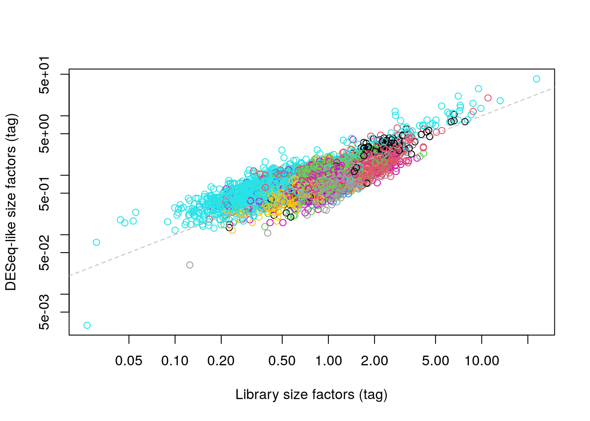

Chapter 18 Integrating with protein abundance

Figure 18.1: This page is under construction. Enjoy these platelets at work instead.
18.1 Motivation
Cellular indexing of transcriptomes and epitopes by sequencing (CITE-seq) is a technique that quantifies both gene expression and the abundance of selected surface proteins in each cell simultaneously (Stoeckius, Hafemeister, et al. 2017). In this approach, cells are first labelled with antibodies that have been conjugated with synthetic RNA tags. A cell with a higher abundance of a target protein will be bound by more antibodies, resulting in more of the corresponding tags. Both the tags and endogenous transcripts are reverse transcribed and captured in a cDNA library; the abundance of each protein or expression of each gene is subsequently quantified by sequencing of each set of features. This provides a powerful tool for interrogating aspects of the proteome (such as post-translational modifications) and other cellular features that would normally be invisible to transcript-based studies.
How should the data for these antibody tags be incorporated into the analysis? While we have counts for both tags and transcripts, there are fundamental differences in nature of the data that make it difficult to treat the former as additional features in the latter. Most experiments involve only a small number of antibodies (<20) that are chosen by the researcher because they are of a priori interest, in contrast to gene expression data that captures the entire transcriptome regardless of the study. The coverage of the tags is also much deeper as they are sequenced separately from the transcripts, allowing the sequencing resources to be concentrated into a smaller number of features. And, of course, the use of antibodies against protein targets involves consideration of separate biases compared to those observed for transcripts.
In this chapter, we will describe some strategies for integrated analysis of antibody tag and transcript data in CITE-seq experiments. We will demonstrate using a PBMC dataset from 10X Genomics that contains quantified abundances for a number of interesting surface proteins.
# Caching it locally with BiocFileCache to avoid repeating it.
library(BiocFileCache)
bfc <- BiocFileCache(ask=FALSE)
stuff <- bfcrpath(bfc, file.path("http://cf.10xgenomics.com",
"samples/cell-exp/3.0.0/pbmc_10k_protein_v3",
"pbmc_10k_protein_v3_filtered_feature_bc_matrix.tar.gz"))
untar(stuff, exdir=tempdir())
# Loading it in as a SingleCellExperiment object.
library(DropletUtils)
sce <- read10xCounts(file.path(tempdir(), "filtered_feature_bc_matrix"))
sce## class: SingleCellExperiment
## dim: 33555 7865
## metadata(1): Samples
## assays(1): counts
## rownames(33555): ENSG00000243485 ENSG00000237613 ... IgG1 IgG2b
## rowData names(3): ID Symbol Type
## colnames: NULL
## colData names(2): Sample Barcode
## reducedDimNames(0):
## spikeNames(0):
## altExpNames(0):18.2 Preprocessing
18.2.1 Setting up the data
The SingleCellExperiment class has an “alternative Experiment” concept to store data for different sets of features but the same cells.
This is achieved by storing another SummarizedExperiment (or an instance of its subclass) inside our SingleCellExperiment where the rows can differ but the columns are the same.
In previous chapters, we were using the alternative Experiments to store spike-in data, but here we will use the concept to split off the antibody tag data.
This isolates the two sets of features to ensure that analyses on one set do not inadvertently use data from the other set, and vice versa.
## [1] "Antibody Capture"## class: SingleCellExperiment
## dim: 17 7865
## metadata(1): Samples
## assays(1): counts
## rownames(17): CD3 CD4 ... IgG1 IgG2b
## rowData names(3): ID Symbol Type
## colnames: NULL
## colData names(0):
## reducedDimNames(0):
## spikeNames(0):
## altExpNames(0):At this point, it is also helpful to coerce the sparse matrix for antibody tags into a dense matrix. The tag counts are usually not sparse so storage as a sparse matrix provides no advantage; in fact, it actually increases memory usage and computational time as the indices of non-zero entries must be unnecessarily stored and processed.
## [,1] [,2] [,3] [,4] [,5] [,6] [,7] [,8] [,9] [,10]
## CD3 18 30 18 18 5 21 34 48 4522 2910
## CD4 138 119 207 11 14 1014 324 1127 3479 2900
## CD8a 13 19 10 17 14 29 27 43 38 28
## CD14 491 472 1289 20 19 2428 1958 2189 55 41
## CD15 61 102 128 124 156 204 607 128 111 130
## CD16 17 155 72 1227 1873 148 676 75 44 37
## CD56 17 248 26 491 458 29 29 29 30 15
## CD19 3 3 8 5 4 7 15 4 6 6
## CD25 9 5 15 15 16 52 85 17 13 18
## CD45RA 110 125 5268 4743 4108 227 175 523 4044 1081
## CD45RO 74 156 28 28 21 492 517 316 26 43
## PD-1 9 9 20 25 28 16 26 16 28 16
## TIGIT 4 9 11 59 76 11 12 12 9 8
## CD127 7 8 12 16 17 15 11 10 231 179
## IgG2a 5 4 12 12 7 9 6 3 19 14
## IgG1 2 8 19 16 14 10 12 7 16 10
## IgG2b 3 3 6 4 9 8 50 2 8 218.2.2 Quality control
For most part, we can depend on QC on the endogenous transcripts to remove empty droplets and low-quality cells. Any failure in cDNA capture for a particular cell will affect the coverage of both transcripts and tags, and changes in mitochondrial RNA content are only reflected in the transcriptomic data; as a result, the tags provide little additional information for QC. For this dataset, the count matrix has already been filtered in CellRanger to remove empty droplets so we only filter on the mitochondrial proportions to remove putative low-quality cells.
library(scater)
mito <- grep("^MT-", rowData(sce)$Symbol)
df <- perCellQCMetrics(sce, subsets=list(Mito=mito))
mito.discard <- isOutlier(df$subsets_Mito_percent, type="higher")
summary(mito.discard)## Mode FALSE TRUE
## logical 7569 296If we want to combine transcript and tag data, it is prudent to ensure that we only retain cells that actually have tag counts.
Recall that droplet-based libraries will contain contamination from ambient solution (Section 6.5), in this case containing containing conjugated antibodies that are either free in solution or bound to cell fragments.
As the tags are (relatively) deeply sequenced, we can expect non-zero counts for most tags in each cell (Figure 18.2; if this is not the case, we may suspect some failure of antibody tag processing for that cell.
We thus remove cells that have unusually low numbers of detected tags, defined here as half of the median across all cells.
(We could also use isOutlier(), but the MAD is zero in this case and filtering would discard useful cells with almost all tags detected.)
ab.detected <- df$`altexps_Antibody Capture_detected`
med.detected <- median(ab.detected)
threshold <- med.detected/2
ab.discard <- ab.detected < threshold
summary(ab.discard)## Mode FALSE TRUE
## logical 7864 1
Figure 18.2: Distribution of the number of detected tags across all cells in the PBMC dataset.
By comparison, the total tag count is less useful as a QC metric because it is heavily correlated with the biological state of the cell. The presence of a targeted protein can lead to a several-fold increase in the total tag count given the binary nature of most surface protein markers. Removing cells with low total tags would strongly penalize cell types that do not exhibit many (or any) of the selected protein targets, and would represent an extreme case of the issues discussed in Section 6.3.2.2.
Finally, to remove the low-quality cells, we subset the SingleCellExperiment as previously described.
This automatically applies the filtering to both the transcript and tag data; such coordination is one of the advantages of storing both datasets in a single object.
18.3 Normalization
Counts for the antibody tags are subject to several biases that must be normalized prior to further analysis. Capture efficiency varies from cell to cell though the differences in biophysical properties between endogenous transcripts and the (much shorter) antibody tags means that the capture-related biases for the two sets of features are unlikely to be identical. Composition biases are also much more pronounced in tag data due to binary nature of target protein abundances. As in Chapter 7, we assume that these are scaling biases and compute tag-specific size factors to remove them. To this end, we again have several strategies that we can choose from to calculate the size factor for each cell:
The simplest approach is to normalize on the total tag counts, effectively the library size for the tags. This is closely related to the common approach of taking the geometric mean of all counts as the size factors (Stoeckius, Hafemeister, et al. 2017), with the only difference being that the total count effectively uses the arithmetic mean instead. Like in Section 7.2, these “tag library size factors” are adequate for clustering but will introduce composition biases that interfere with interpretation of the fold-changes between clusters.
## Min. 1st Qu. Median Mean 3rd Qu. Max. ## 0.027 0.524 0.905 1.000 1.266 22.817# Alternatively using the geometric mean. # TODO: move into the DropletUtils package. sf.geo <- exp(colMeans(log1p(counts(altExp(sce))))) sf.geo <- sf.geo/mean(sf.geo) summary(sf.geo)## Min. 1st Qu. Median Mean 3rd Qu. Max. ## 0.07 0.66 0.85 1.00 1.07 45.48Ideally, we would like to compute size factors that adjust for the composition biases. This usually requires an assumption that most tags are not differentially expressed between cell types/states. At first glance, this appears to be a strong assumption - the target proteins were specifically chosen as they exhibit interesting heterogeneity across the population, meaning that a non-DE majority across tags would be unlikely. However, we can still make it work by assuming that (i) each cell only expresses a minority of the targeted proteins and (ii) the ambient contamination in each library is the same in terms of the number of molecules captured by each droplet. We can then compute size factors to equalize the coverage of these contaminating tags, thus eliminating cell-to-cell differences in capture efficiency. This is loosely based on a similar approach for normalization of ChIP-seq data based on background enrichment (Lun and Smyth 2016).
If possible, we would prefer to obtain an estimate of the ambient profile from the barcodes that were identified as empty droplets (Section ??). In this case, though, this information has already been discarded from the provided dataset, so we instead use a proxy profile constructed from the average of all cells under the assumption that all cell types are equally likely to contribute to the ambient profile. We define size factors using a DESeq-like approach based on the median of the ratio of each cell’s counts to the ambient profile.
library(DelayedMatrixStats) # TODO: move into the DropletUtils package. ambient <- rowMeans(counts(altExp(sce))) sf.amb <- colMedians(counts(altExp(sce))/ambient) sf.amb <- sf.amb/mean(sf.amb) summary(sf.amb)## Min. 1st Qu. Median Mean 3rd Qu. Max. ## 0.00 0.59 0.83 1.00 1.14 41.80In one subpopulation, the DESeq-like size factors are consistently larger than the tag library size factors, whereas the opposite is true for most of the other subpopulations (Figure 18.3). This is consistent with the presence of composition biases due to differential abundance of the targeted proteins between subpopulations. Here, composition biases would introduce a spurious 2-fold change in normalized tag abundance if the library size factors were used.
# Coloring by cluster to highlight the composition biases. # We set k=20 to get fewer, broader clusters for a clearer picture. library(scran) tagdata <- logNormCounts(altExp(sce)) # library size factors by default. g <- buildSNNGraph(tagdata, k=20, d=NA) # no need for PCA, see below. clusters <- igraph::cluster_walktrap(g)$membership plot(sf.lib, sf.amb, log="xy", col=clusters, xlab="Library size factors (tag)", ylab="DESeq-like size factors (tag)") abline(0, 1, col="grey", lty=2)Figure 18.3: DESeq-like size factors for each cell in the PBMC dataset, compared to tag library size factors. Each point is a cell and is colored according to the cluster identity defined from normalized tag data.
Some experiments will include isotype control antibodies that have similar properties to a primary antibody but lack a specific target in the cell, thus providing a measure of non-specific binding. As with spike-in normalization (Section 7.4), we could make the assumption that these control tags should not be differentially abundant between cells. Any difference thus represents some bias that should be normalized by defining control-based size factors from the sum of counts over all control tags. We demonstrate this approach below by computing size factors from the immunoglobulin (IgG) controls (Figure 18.4).
controls <- grep("^Ig", rownames(altExp(sce))) sf.control <- librarySizeFactors(altExp(sce), subset_row=controls) summary(sf.control)## Min. 1st Qu. Median Mean 3rd Qu. Max. ## 0.00 0.69 0.88 1.00 1.14 44.02plot(sf.amb, sf.control, log="xy", xlab="DESeq-like size factors (tag)", ylab="Control size factors (tag)") abline(0, 1, col="grey", lty=2)
Figure 18.4: IgG control-derived size factors for each cell in the PBMC dataset, compared to the DESeq-like size factors.
This approach exchanges the previous non-DE assumptions for another assumption about the lack of differential abundance in the control tags. We might feel that the latter is a generally weaker assumption, but it is possible for non-specific binding to vary due to biology (e.g., when the cell surface area increases), at which point this normalization strategy may not be appropriate.
We suggest using the DESeq-like size factors by default, as these are the most general and eliminate the major problems with composition biases.
Running logNormCounts() will then perform scaling normalization and log-transformation for both the endogenous transcripts and the tags using their respective size factors.
sizeFactors(altExp(sce)) <- sf.amb
sce <- logNormCounts(sce, use_altexps=TRUE)
# Checking that we have normalized values:
assayNames(sce)## [1] "counts" "logcounts"## [1] "counts" "logcounts"18.4 Proceeding to downstream analysis
Unlike transcript-based counts, feature selection is largely unnecessary for analyzing tag data. This is because feature selection has already occurred during experimental design, where the manual choice of target proteins means that all tags correspond to interesting features by definition. From a practical perspective, the tag count matrix is already small so there is no need for data compaction from using HVGs or PCs. Moreover, each tag is often chosen to capture some orthogonal biological signal, so there is not much extraneous noise in higher dimensions that can be readily removed. This suggests we should directly apply downstream procedures like clustering and visualization on the log-normalized abundance matrix for the tags (Figure 18.5).
# Set d=NA so that the function does not perform PCA.
g <- buildSNNGraph(altExp(sce), d=NA)
clusters <- igraph::cluster_walktrap(g)$membership
# Generating a t-SNE plot.
set.seed(1010010)
altExp(sce) <- runTSNE(altExp(sce))
altExp(sce)$cluster <- factor(clusters)
plotTSNE(altExp(sce), colour_by="cluster", text_by="cluster", text_col="red")
Figure 18.5: \(t\)-SNE plot generated from the log-normalized abundance of each tag in the PBMC dataset. Each point is a cell and is labelled according to its assigned cluster.
With only a few tags, characterization of each cluster is most efficiently achieved by creating a heatmap of the average log-abundance of each tag (Figure 18.6).
For this experiment, we can easily identify B cells (CD19+), various subsets of T cells (CD3+, CD4+, CD8+), monocytes and macrophages (CD14+, CD16+), to name a few.
More detailed examination of the distribution of abundances within each cluster is easily performed with plotExpression() where strong bimodality may indicate that finer clustering is required to resolve cell subtypes.
averaged <- sumCountsAcrossCells(altExp(sce), clusters,
exprs_values="logcounts", average=TRUE)
library(pheatmap)
pheatmap(averaged - rowMeans(averaged),
breaks=seq(-3, 3, length.out=101))
Figure 18.6: Heatmap of the average log-normalized abundance of each tag in each cluster of the PBMC dataset. Colors represent the log2-fold change from the grand average across all clusters.
Of course, this provides little information beyond what we could have obtained from a mass cytometry experiment; the real value of this data lies in the integration of protein abundance with gene expression.
18.5 Integration with gene expression data
18.5.1 By subclustering
In the simplest approach to integration, we take cells in each of the tag-derived clusters and perform subclustering using the transcript data. This is an in silico equivalent to an experiment that performs FACS to isolate cell types followed by scRNA-seq for further characterization. We exploit the fact that the tag abundances are cleaner (larger counts, stronger signal) for more robust identification of broad cell types, and use the gene expression data to identify more subtle changes in the rest of the transcriptome. We demonstrate below by looping over all of the tag-derived clusters and subclustering on gene expression:
set.seed(101010)
all.sce <- all.markers <- list()
for (i in as.character(unique(clusters))) {
chosen <- clusters==i
x <- sce[,chosen]
x <- logNormCounts(x)
dec <- modelGeneVar(x)
top <- getTopHVGs(dec, prop=0.1)
x <- runPCA(x, subset_row=top, ncomponents=25)
g.trans <- buildSNNGraph(x, use.dimred="PCA")
x$subcluster <- igraph::cluster_walktrap(g.trans)$membership
x$subcluster <- paste0("SUB_", x$subcluster) # avoid confusion with parents.
all.sce[[i]] <- x
all.markers[[i]] <- findMarkers(x, x$subcluster, direction="up")
}
# Checking out how many subclusters are in each tag-derived cluster.
lengths(all.markers)## 3 1 9 4 10 5 22 15 12 21 26 27 11 8 14 2 16 17 7 19 18 13 6 20 25
## 12 37 8 7 8 3 2 12 2 2 2 22 3 3 3 3 2 2 2 3 2 3 3 3 29
## 28 24 23
## 12 17 13Another benefit of subclustering is that we can use the annotation on the tag-derived clusters to facilitate annotation of each subcluster.
If we knew that cluster X contained T cells from the tag-derived data, there is no need to identify subclusters X.1, X.2, etc. as T cells from scratch; rather, we can focus on the more subtle (and interesting) differences between the subclusters using findMarkers().
For example, cluster 12 contains CD8+ T cells according to Figure 18.6, in which we further identify internal subclusters based on granzyme expression (Figure 18.7).
Subclustering is also conceptually appealing as it avoids comparing log-fold changes in tag abundances with log-fold changes in gene expression.
This ensures that variation (or noise) from the transcript counts does not compromise cell type/state identification from the relatively cleaner tag abundances.
of.interest <- "12"
plotExpression(all.sce[[of.interest]], x="subcluster",
features=c("ENSG00000100450", "ENSG00000113088"))
Figure 18.7: Distribution of log-normalized expression values of GZMH (left) and GZHK (right) in transcript-derived subclusters of a tag-derived subpopulation of CD8+ T cells.
The downside is that relying on previous results increases the risk of misleading conclusions when ambiguities in those results are not considered, as previously discussed in Section 10.6. This requires some additional checks to ensure that each subcluster has similar tag abundances, e.g., using a heatmap as in Figure 18.6 or with a series of plots like in Figure 18.8.
sce.cd8 <- all.sce[[of.interest]]
plotExpression(altExp(sce.cd8), x=I(sce.cd8$subcluster),
features=c("CD3", "CD8a"))
Figure 18.8: Distribution of log-normalized abundances of all tags in each subcluster of the CD8+ T cell population.
18.5.2 By combined clustering
Alternatively, we can combine the information from both sets of features into a single data structure for use in downstream analyses. This is logistically convenient as the combined structure is compatible with routine analysis workflows for transcript-only data. To illustrate, we first perform some standard steps on the transcript count matrix:
sce.com <- logNormCounts(sce)
dec.com <- modelGeneVar(sce.com)
top.com <- getTopHVGs(dec.com, prop=0.1)The simplest version of this idea involves literally combining the log-normalized abundance matrix for the tags with the log-expression matrix (or its compacted form, the matrix of PCs) to obtain a single matrix for use in downstream procedures. This requires some reweighting to balance the contribution of the transcript and tag data to the total variance in the combined matrix, especially given that the former has around 100-fold more features than the latter. We see that the number of clusters is slightly higher than that from the tag data alone, consistent with the introduction of additional heterogeneity when the two feature sets are combined.
# TODO: push this into a function somewhere.
library(DelayedMatrixStats)
transcript.data <- logcounts(sce.com)[top.com,,drop=FALSE]
transcript.var <- sum(rowVars(DelayedArray(transcript.data)))
tag.data <- logcounts(altExp(sce.com))
tag.var <- sum(rowVars(DelayedArray(tag.data)))
reweight <- sqrt(transcript.var/tag.var)
combined <- rbind(transcript.data, tag.data*reweight)
# 'buildSNNGraph' conveniently performs the PCA for us if requested. We use
# more PCs in 'd' to capture more variance in both sets of features. Note that
# this uses IRLBA by default so we need to set the seed.
set.seed(100010)
g.com <- buildSNNGraph(combined, d=50)
clusters.com <- igraph::cluster_walktrap(g.com)$membership
table(clusters.com)## clusters.com
## 1 2 3 4 5 6 7 8 9 10 11 12 13 14 15
## 51 347 134 49 849 73 1028 75 503 1150 81 1693 52 344 12
## 16 17 18 19 20 21 22 23 24 25 26 27 28 29 30
## 46 19 25 26 41 66 36 72 126 16 78 384 68 48 27
## 31 32
## 32 17A more sophisticated variant of this idea uses the UMAP algorithm (McInnes, Healy, and Melville 2018) to integrate information from the two sets of features. Very loosely speaking, we can imagine this as an intersection of the nearest neighbor graphs formed from each set, which effectively encourages the formation of communities of cells that are close in both feature spaces. Here, we perform two rounds of UMAP; one round retains high dimensionality for a faithful representation of the data during clustering, while the other performs dimensionality reduction for a pretty visualization. This yields an extremely fine-grained clustering in Figure 18.9, which is attributable to the stringency of intersection operations for defining the local neighborhood.
set.seed(1001010)
sce.com <- runPCA(sce.com, subset_row=top.com, ncomponents=25)
transcript.data2 <- reducedDim(sce.com, "PCA")
tag.data2 <- t(logcounts(altExp(sce.com)))
# Combining without dimensionality reduction, for clustering:
combined2 <- cbind(transcript.data2, tag.data2)
metric <- list(
euclidean=seq_len(ncol(transcript.data2)),
euclidean=seq_len(ncol(tag.data2))
)
library(uwot)
set.seed(0101110)
umap.com <- umap(combined2, metric=metric, n_components=ncol(combined2))
g.com2 <- buildSNNGraph(umap.com, transposed=TRUE, d=NA)
clusters.com2 <- igraph::cluster_walktrap(g.com2)$membership
# Combining again with dimensionality reduction, for visualization:
set.seed(0101110)
umap.vis <- umap(combined2, metric=metric)
reducedDim(sce.com, "combinedUMAP") <- umap.vis
sce.com$cluster <- clusters.com2
plotReducedDim(sce.com, "combinedUMAP",
colour_by="cluster", text_by="cluster")
Figure 18.9: UMAP plot obtained by combining transcript and tag data in the PBMC dataset. Each point represents a cell and is colored according to its assigned cluster.
An even more sophisticated approach uses factor analysis to identify common and unique factors of variation in each feature set. The set of factors can then be used as low-dimensional coordinates for each cell in downstream analyses, though a number of additional statistics are also computed that may be useful, e.g., the contribution of each feature to each factor.
These combined strategies are convenient but do not consider (or implicitly make assumptions about) the importance of heterogeneity in the tag data relative to the transcript data. For example, the UMAP approach takes equal contributions from both sets of features to the intersection, which may not be appropriate if the biology of interest is concentrated in only one set. More generally, this relates to the potential for uninteresting noise in one set to interfere with biological signal in the other set, a concern that is largely avoided during subclustering.
18.5.3 By differential testing
In more interesting applications of this technology, protein targets are chosen that reflect some functional activity rather than cell type. (Because, frankly, the latter is not particularly hard to infer from transcript data in most cases.) A particularly elegant example is the use of antibodies targeting influenza peptide-MHCII complexes in T cells, albeit for mass cytometry (Fehlings et al. 2018). If the aim is to test for differences in the functional readout, a natural analysis strategy is to use the transcript data for clustering (Figure ??) and perform differential testing between clusters or conditions for the relevant tags.
sce <- logNormCounts(sce)
dec <- modelGeneVar(sce)
top <- getTopHVGs(dec, prop=0.1)
set.seed(1001010)
sce <- runPCA(sce, subset_row=top, ncomponents=25)
g <- buildSNNGraph(sce, use.dimred="PCA")
clusters <- igraph::cluster_walktrap(g)$membership
sce$cluster <- factor(clusters)
set.seed(1000010)
sce <- runTSNE(sce, dimred="PCA")
plotTSNE(sce, colour_by="cluster", text_by="cluster")
Figure 18.10: \(t\)-SNE plot of the PBMC dataset based on the transcript data. Each point is a cell and is colored according to the assigned cluster.
We demonstrate this approach using findMarkers() to test for differences in tag abundance between clusters (Chapter ??).
For example, if PD-1 was a functional readout for something - say, T cell exhaustion (Pauken and Wherry 2015) - we might be interested in its upregulation in cluster 16.
Methods from Chapter 14 can be similarly used to test for differences between conditions.
markers <- findMarkers(altExp(sce), sce$cluster)
of.interest <- markers[[16]]
pheatmap(as.matrix(of.interest[,-c(1:3)]),
breaks=seq(-3, 3, length.out=101))Figure 18.11: Heatmap of log-fold changes in tag abundances in cluster 16 compared to all other clusters identified from transcript data in the PBMC data set.
The main appeal of this approach is that it avoids data snooping (Section 11.5.1) as the clusters are defined without knowledge of the tags. This improves the statistical rigor of the subsequent differential testing on the tag abundances (though only to some extent; other problems are still present, such as the lack of true replication in between-cluster comparisons). From a practical perspective, this approach yields fewer clusters and reduces the amount of work involved in manual annotation, especially if there are multiple functional states (e.g., stressed, apoptotic, stimulated) for each cell type. However, it is fundamentally limited to per-tag inferences; identification of subpopulations with interesting combinations of tag abundances instead requires high-dimensional analyses like clustering.
Session Info
R version 3.6.1 (2019-07-05)
Platform: x86_64-pc-linux-gnu (64-bit)
Running under: Ubuntu 14.04.5 LTS
Matrix products: default
BLAS: /home/ramezqui/Rbuild/danbuild/R-3.6.1/lib/libRblas.so
LAPACK: /home/ramezqui/Rbuild/danbuild/R-3.6.1/lib/libRlapack.so
locale:
[1] LC_CTYPE=en_US.UTF-8 LC_NUMERIC=C
[3] LC_TIME=en_US.UTF-8 LC_COLLATE=C
[5] LC_MONETARY=en_US.UTF-8 LC_MESSAGES=en_US.UTF-8
[7] LC_PAPER=en_US.UTF-8 LC_NAME=C
[9] LC_ADDRESS=C LC_TELEPHONE=C
[11] LC_MEASUREMENT=en_US.UTF-8 LC_IDENTIFICATION=C
attached base packages:
[1] parallel stats4 stats graphics grDevices utils datasets
[8] methods base
other attached packages:
[1] uwot_0.1.4 Matrix_1.2-17
[3] pheatmap_1.0.12 scran_1.13.32
[5] DelayedMatrixStats_1.7.2 scater_1.13.28
[7] ggplot2_3.2.1 DropletUtils_1.5.12
[9] SingleCellExperiment_1.7.11 SummarizedExperiment_1.15.10
[11] DelayedArray_0.11.8 BiocParallel_1.19.6
[13] matrixStats_0.55.0 Biobase_2.45.1
[15] GenomicRanges_1.37.17 GenomeInfoDb_1.21.2
[17] IRanges_2.19.18 S4Vectors_0.23.25
[19] BiocGenerics_0.31.6 BiocFileCache_1.9.1
[21] dbplyr_1.4.2 Cairo_1.5-10
[23] BiocStyle_2.13.2 OSCAUtils_0.0.1
loaded via a namespace (and not attached):
[1] bitops_1.0-6 bit64_0.9-7 RcppAnnoy_0.0.13
[4] RColorBrewer_1.1-2 httr_1.4.1 tools_3.6.1
[7] backports_1.1.5 R6_2.4.0 irlba_2.3.3
[10] HDF5Array_1.13.11 vipor_0.4.5 DBI_1.0.0
[13] lazyeval_0.2.2 colorspace_1.4-1 withr_2.1.2
[16] tidyselect_0.2.5 gridExtra_2.3 bit_1.1-14
[19] curl_4.2 compiler_3.6.1 BiocNeighbors_1.3.5
[22] labeling_0.3 bookdown_0.14 scales_1.0.0
[25] rappdirs_0.3.1 stringr_1.4.0 digest_0.6.22
[28] rmarkdown_1.16 R.utils_2.9.0 XVector_0.25.0
[31] pkgconfig_2.0.3 htmltools_0.4.0 limma_3.41.20
[34] highr_0.8 rlang_0.4.1 RSQLite_2.1.2
[37] dplyr_0.8.3 R.oo_1.22.0 RCurl_1.95-4.12
[40] magrittr_1.5 BiocSingular_1.1.7 GenomeInfoDbData_1.2.2
[43] Rcpp_1.0.2 ggbeeswarm_0.6.0 munsell_0.5.0
[46] Rhdf5lib_1.7.6 viridis_0.5.1 R.methodsS3_1.7.1
[49] stringi_1.4.3 yaml_2.2.0 edgeR_3.27.14
[52] zlibbioc_1.31.0 Rtsne_0.15 rhdf5_2.29.7
[55] grid_3.6.1 blob_1.2.0 dqrng_0.2.1
[58] crayon_1.3.4 lattice_0.20-38 cowplot_1.0.0
[61] locfit_1.5-9.1 zeallot_0.1.0 knitr_1.25
[64] pillar_1.4.2 igraph_1.2.4.1 codetools_0.2-16
[67] glue_1.3.1 evaluate_0.14 RcppParallel_4.4.4
[70] BiocManager_1.30.9 vctrs_0.2.0 gtable_0.3.0
[73] purrr_0.3.3 assertthat_0.2.1 xfun_0.10
[76] rsvd_1.0.2 RSpectra_0.15-0 viridisLite_0.3.0
[79] tibble_2.1.3 beeswarm_0.2.3 memoise_1.1.0
[82] statmod_1.4.32 Bibliography
Fehlings, M., S. Chakarov, Y. Simoni, B. Sivasankar, F. Ginhoux, and E. W. Newell. 2018. “Multiplex peptide-MHC tetramer staining using mass cytometry for deep analysis of the influenza-specific T-cell response in mice.” J. Immunol. Methods 453 (February):30–36.
Lun, A. T., and G. K. Smyth. 2016. “csaw: a Bioconductor package for differential binding analysis of ChIP-seq data using sliding windows.” Nucleic Acids Res. 44 (5):e45.
McInnes, Leland, John Healy, and James Melville. 2018. “UMAP: Uniform Manifold Approximation and Projection for Dimension Reduction.” arXiv E-Prints, February, arXiv:1802.03426.
Pauken, K. E., and E. J. Wherry. 2015. “Overcoming T cell exhaustion in infection and cancer.” Trends Immunol. 36 (4):265–76.
Stoeckius, M., C. Hafemeister, W. Stephenson, B. Houck-Loomis, P. K. Chattopadhyay, H. Swerdlow, R. Satija, and P. Smibert. 2017. “Simultaneous epitope and transcriptome measurement in single cells.” Nat. Methods 14 (9):865–68.